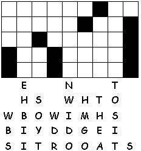
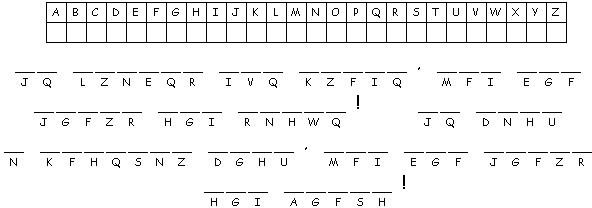

This week's lessons: Genesis 24:34-38, 42-49, 58-67 and [Psalm 45:10-17 or Song of Solomon 2:8-13] or, Zechariah 9:9-12 and Psalm 145:8-14, Romans 7:15-25a, Matthew 11:16-19, 25-30
Elementary School Pew-work
O F V N L S G W A
C D
|
Word List VINDICATED COLLECTORS DRUNKARD DRINKING SINNERS NEITHER MATTHEW GLUTTON WISDOM FRIEND EATING DEMON DEEDS THEY NRSV LOOK JOHN CAME YET TAX SON SAY NOR MAN HAS FOR AND OF BY |
(Matthew 11:18-19 NRSV) For John came neither eating nor drinking, and they say, 'He has a demon'; the Son of Man came eating and drinking, and they say, 'Look, a glutton and a drunkard, a friend of tax collectors and sinners!' Yet wisdom is vindicated by her deeds." |
from http://www.efree.mb.ca/lectionarypuzzles free to distribute for free with this notice. Words are in a straight line left to right or top to bottom |
||
1. How did John the Baptist live?
_____________________________________________________________
2. How did Jesus live?
_____________________________________________________________
3. Did both men bring the Word of God to the people?
_____________________________________________________________
4. What did Jesus promise to everyone who came to him?
_____________________________________________________________
Questions taken from Sunday School Lessons; http://www.sundayschoollessons.com/baplord.htm
 
Next week: Genesis 25:19-34 and Psalm 119:105-112 or Isaiah 55:10-13 and Psalm 65:(1-8), 9-13, Romans 8:1-11, Matthew 13:1-9, 18-23